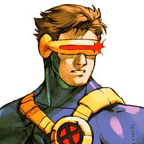
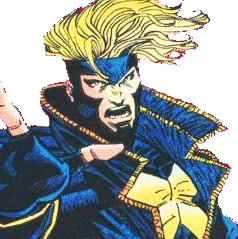
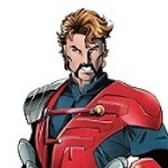

Turquoise
Gem type: Turquoise
Bio
Aurora Turquoise is an ancestral being, former Titan, who became the Master of Magic and one of the twelve members of the Diamond Guard. With an existence spanning over 12 million years, Aurora represents a primordial force in the Alphamundus universe, dedicating her eternal life to protecting the cosmic balance and granting second chances to beings through her Cyan power.
Abilities: Pure Magic Gem Transformation
Allies:
-
Blue Diamond
 -
Yellow Diamond
 -
Red Diamond
 -
Tania

-
Faustian
Enemies:
- Karai
- Umbra
- Agatheah
- Agathonia